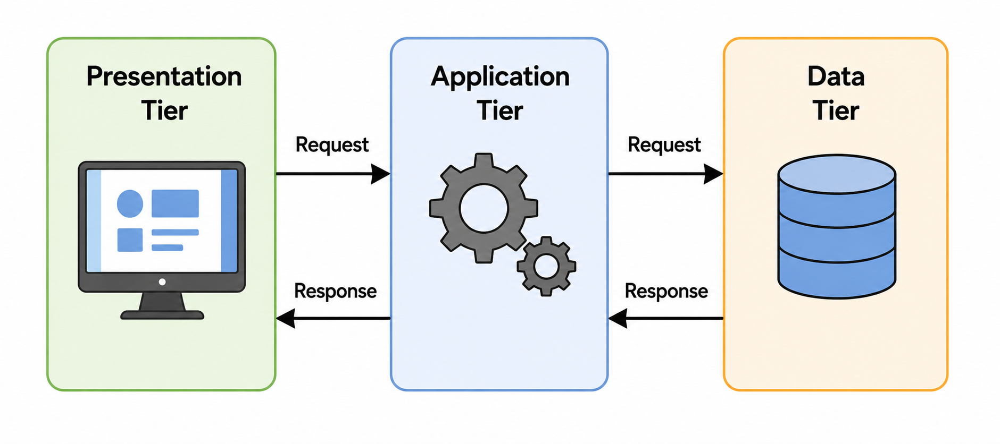

Roadmap
Responsibility boundaries in growing applications
Three-tier architecture: presentation, application, and data
Two-tier and three-tier request flow
Plain Java code with controller, service, and repository
Validation, business rules, and data access placement
Common responsibility mistakes
Learning Goals
Describe the purpose of presentation, application, and data responsibilities.
Explain why direct UI-to-data access becomes risky as applications grow.
Organize Java code into controller, service, and repository classes.
Trace the flow from user action to service rule to data operation.
Recognize common responsibility mistakes in Java applications.
Main question: how should an application divide responsibilities so it stays understandable as it grows?
Small Program vs. Growing Application
Small program
Few files
Simple input and output
Little or no persistent data
Easy to inspect manually
Growing application
User interface or API boundary
Business rules
Validation
File or database access
Error handling and testing
Mixed Responsibilities
A method becomes difficult to maintain when it owns many unrelated jobs.
Reads values from the screen
Checks business rules
Builds a database command
Saves data
Chooses the message shown to the user
Changing one responsibility can accidentally break another responsibility.
Three Responsibility Areas
Presentation
User interaction
Input and output
Display formatting
Application
Business rules
Workflows
Coordination
Data
Storage
Retrieval
Data mapping
What Is Three-Tier Architecture?
Three-tier architecture separates an application into three major responsibility areas.

Presentation: user interface, user input, and displayed output
Application: business rules, workflows, and coordination
Data: storage, retrieval, and persistence services
Two-Tier vs. Three-Tier
| Architecture | Request flow | Main result |
|---|---|---|
Two-tier |
Presentation → Data |
The UI talks directly to storage, so rules and queries often become mixed with screen code. |
Three-tier |
Presentation → Application → Data |
Business rules sit between the user interface and storage. |
Responsibilities in Systems and Code
The same three responsibilities appear in both deployed systems and Java code.
Deployed system
Presentation runs in a browser, desktop app, or mobile app
Application logic runs in services or server-side code
Data lives in a database, file store, or persistence service
Java code organization
Controller receives input and chooses the response
Service applies rules and coordinates work
Repository hides storage access
The names change by context, but the responsibility boundary stays clear.
Java Example Names
ProductControllerbelongs to the presentation responsibility.ProductServicebelongs to the application responsibility.ProductRepositorybelongs to the data responsibility.A desktop app may keep these classes in one Java process.
A web app may connect a browser, server, and database across separate processes.
Responsibility Boundaries
| Area | Owns | Should avoid |
|---|---|---|
Presentation |
User input, output, display formatting |
Business rules and SQL |
Application / Service |
Business rules, validation, workflows |
UI controls and database-specific details |
Data / Repository |
Storage, retrieval, data mapping |
UI decisions and business workflow rules |
Product Catalog Example
A small product catalog can be divided into classes with clear responsibilities.
| Class | Area | Responsibility |
|---|---|---|
| Domain | Represents product data |
| Presentation | Receives input and displays results |
| Application | Applies product rules and workflows |
| Data | Stores and retrieves products |
Domain Object
The domain object represents information the application works with.
public record Product(int id, String name, double price) { }It is not a button, scene, table row, SQL statement, or HTTP response.
It is the application data concept shared by the controller, service, and repository.
Presentation Code
Presentation code receives user actions and shows results.
Reads text fields, menu commands, buttons, or request data
Converts simple input formats when needed
Calls the service code
Displays a result or error message
Example: read "49.99" from a form and pass 49.99 to the service.
Application / Service Code
Service code owns application rules and workflows.
Checks required business rules
Coordinates one or more data operations
Returns application results
Does not depend on UI controls
Example rule: a product name cannot be blank, and a product price cannot be negative.
Data / Repository Code
Repository code hides how products are stored.
Saves new products
Finds products by id or criteria
Maps stored data into domain objects
Does not decide how the user interface should respond
The storage can start as an in-memory list and later become a database.
Repository Interface
The service can depend on a repository capability instead of one storage implementation.
public interface ProductRepository {
Product save(String name, double price);
List<Product> findAll();
}InMemoryProductRepositorycan be used during early development.A database repository can be introduced without changing the service rule itself.
Dependency on a Repository Interface
The service should depend on what storage can do, not on one specific storage class.
public interface ProductRepository {
Product save(String name, double price);
List<Product> findAll();
}
public class ProductService {
private final ProductRepository repository;
public ProductService(ProductRepository repository) {
this.repository = repository;
}
}ProductControllerdepends onProductService.ProductServicedepends on theProductRepositoryinterface.InMemoryProductRepositoryor a database repository can provide the implementation.The service rules do not change when storage changes.
Code dependency direction: Controller → Service → Repository interface
Manual Object Wiring
Plain Java applications must create and connect their objects.
ProductRepository repository = new InMemoryProductRepository();
ProductService service = new ProductService(repository);
ProductController controller = new ProductController(service);The connected objects form an object graph: controller → service → repository.
Request Flow Through the Code
A user action should move through the code in a clear order.
Presentation receives the action and reads input.
Application / Service validates the request and applies business rules.
Data / Repository stores or retrieves data.
Application / Service receives the data result and prepares the application result.
Presentation displays the result to the user.
Where Validation Belongs
| Validation type | Best code location | Example |
|---|---|---|
Input shape |
Presentation |
Can the price text become a number? |
Business rule |
Service |
Price cannot be negative. |
Storage constraint |
Repository / database |
Product ID must be unique. |
Business Rules Belong in the Service
A business rule should be protected no matter which presentation is used.
A JavaFX screen can call
ProductService.A command-line menu can call
ProductService.A future REST controller can call
ProductService.
If the rule is only inside one screen, another entry point may bypass it.
Repository Hides Storage Details
Service sees repository operations
save(...)findAll()findById(...)
Repository handles storage details
In-memory list
File storage
Database access
Mapping stored data
The service depends on what the repository can do, not how it does it.
Example Flow: Add Product
Presentation receives name
"Keyboard"and price text"49.99".Presentation converts price text to a number.
Service checks that name is not blank and price is not negative.
Repository assigns an id and stores the product.
Service returns the saved product.
Presentation displays confirmation.
Mistake: UI Talks Directly to Data
Incorrect code flow: Presentation → Data
Business rules become scattered across UI screens.
Changing storage details can break presentation code.
Testing rules without the UI becomes harder.
Prefer: Presentation → Service → Data
Mistake: Fat Controller
A controller becomes too large when it owns too many responsibilities.
| Controller should do | Controller should avoid |
|---|---|
Receive input | Business workflows |
Call the service | Database queries |
Choose the response | Large validation policies |
Mistake: Service Knows the UI
Service code should not depend on JavaFX controls or screen details.
| Wrong responsibility | Better responsibility |
|---|---|
Service changes a |
Service returns a result; presentation displays it. |
Service opens a dialog. |
Presentation asks the user and passes the decision. |
Service reads a text field. |
Presentation reads the text field and calls the service. |
Mistake: Repository Owns Business Rules
Repository should know
How to save
How to find
How to map stored data
Repository should avoid
Whether a sale is allowed
Whether a user may perform an action
How a screen should respond
Desktop and Web Applications
| Application type | Presentation responsibility | Application responsibility | Data responsibility |
|---|---|---|---|
Desktop |
JavaFX screen |
Service classes in the same app |
Files or database |
Web |
Browser or controller/API boundary |
Service classes on the server |
Repositories and database |
The deployment can change while the responsibilities stay recognizable.
Security and Trust Boundaries
User input should not be trusted just because it came from a screen or client.
Service code should enforce important rules.
Repository code should use safe data access patterns.
Secrets and database credentials should not be exposed to presentation code.
Classify the Responsibility
Place each responsibility in presentation, service, or data.
Display “Product saved” to the user.
Reject a product with a negative price.
Save the product to storage.
Convert price text from a form into a number.
Find all products cheaper than a given amount.
Decide whether a user is allowed to delete a product.
Possible Classification
| Responsibility | Area |
|---|---|
Display “Product saved” | Presentation |
Reject negative price | Service |
Save product to storage | Data |
Convert price text | Presentation |
Find products cheaper than amount | Data query or service workflow |
Check delete permission | Service |
Key Takeaways
Three-tier architecture separates presentation, application logic, and data access.
In Java code, those responsibilities often become controller, service, and repository classes.
Presentation code should handle input and output, not business rules or SQL.
Service code should protect application rules and workflows.
Repository code should hide storage details.
Clear boundaries make applications easier to test, change, and extend.
Final Mental Model
| Responsibility area | Main job | Java example |
|---|---|---|
Presentation |
Receive input and display results |
Controller, JavaFX screen, REST endpoint |
Application / Service |
Apply rules and coordinate work |
Service class |
Data / Repository |
Store, retrieve, and map data |
Repository or DAO |